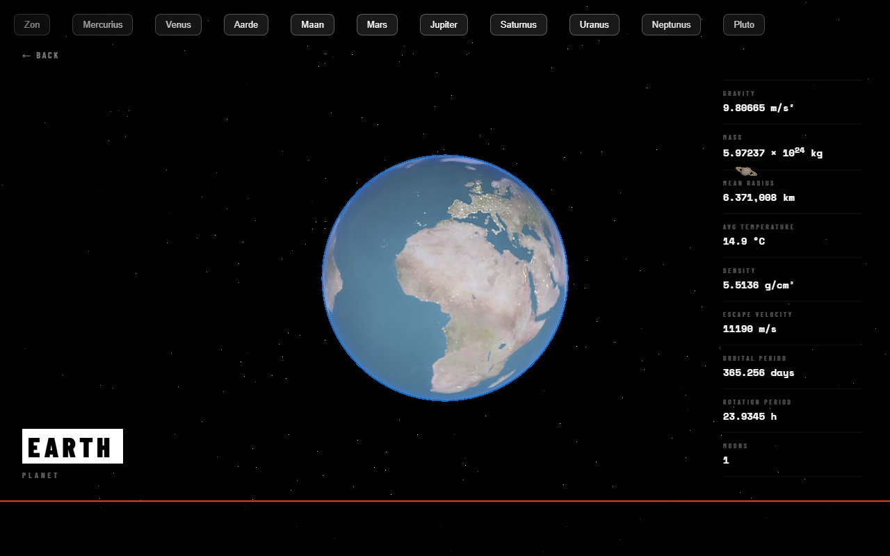

Solar System

Wat je in de demo ziet gebeuren: What you see happening in the demo:
- Vlieg vrij door een 3D-zonnestelsel. Fly freely through a 3D solar system.
- Klik een planeet — de camera glijdt er soepel naartoe. Click a planet — the camera glides smoothly toward it.
- Echte API-data verschijnt: zwaartekracht, massa, straal, temperatuur, omlooptijd. Real API data appears: gravity, mass, radius, temperature, orbital period.
- De zon gloeit met een bloom-effect boven een sterrenveld. The sun glows with a bloom effect over a field of stars.
Over dit projectAbout this project
Voor dit vak heb ik een 3D-website gebouwd met behulp van een externe API en Three.js. Het project was een grote stap in mijn ontwikkeling als developer: ik leerde hoe je data van een API verwerkt en visueel weergeeft in een interactieve 3D-omgeving.
For this course I built a 3D website using an external API and Three.js. The project was a big step in my growth as a developer: I learned how to process data from an API and display it visually in an interactive 3D environment.
Gebruikte technologieënTechnologies Used
- Frontend: Astro, Three.js (WebGL) en GSAP voor animaties
- Data: Le Système Solaire API voor planeetdata
- Web-API's: WebGL en localStorage
- Hosting: Render (Node.js)
- Frontend: Astro, Three.js (WebGL) and GSAP for animations
- Data: Le Système Solaire API for planet data
- Web APIs: WebGL and localStorage
- Hosting: Render (Node.js)
Wat ik heb geleerdWhat I learned
Ik heb geleerd hoe je een volledige 3D-website bouwt en wat de echte kracht van JavaScript is. API's ontsluiten enorme hoeveelheden data die je creatief kunt inzetten.
I learned how to build a full 3D website and discovered the real power of JavaScript. APIs unlock enormous amounts of data that you can use creatively.
Links
- Bekijk het live project →View the live project → — gratis hosting, kan ~30 sec. duren om op te starten — free hosting, may take up to ~30 sec. to wake up
- GitHub-repository →GitHub repository →